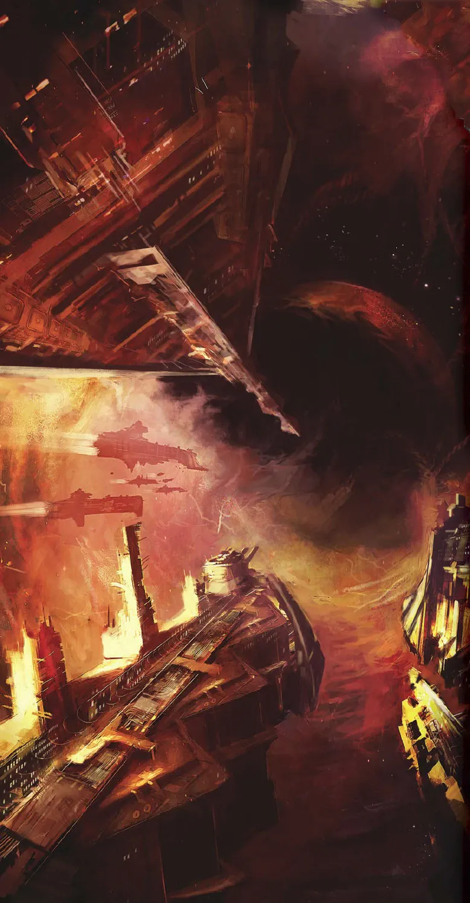
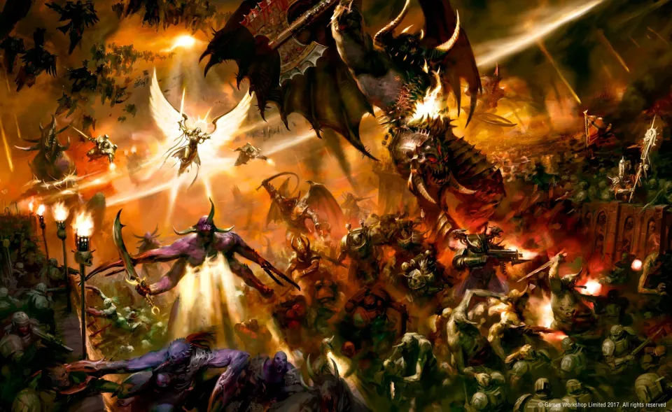
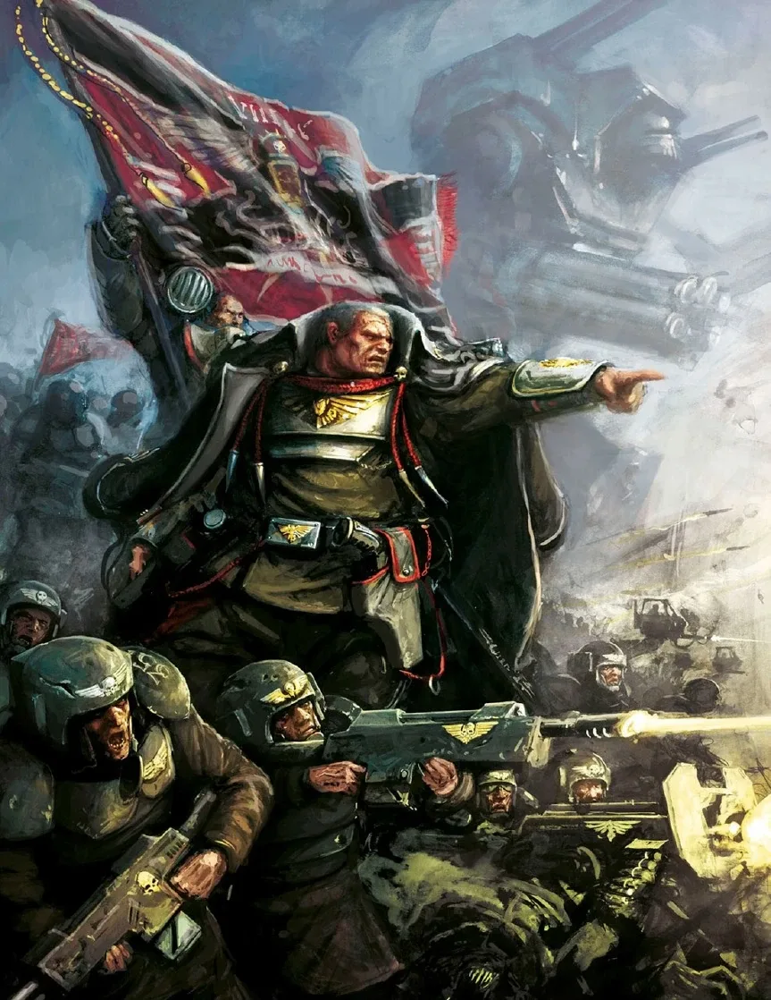
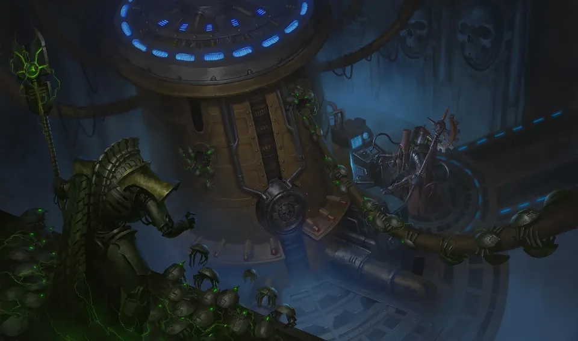
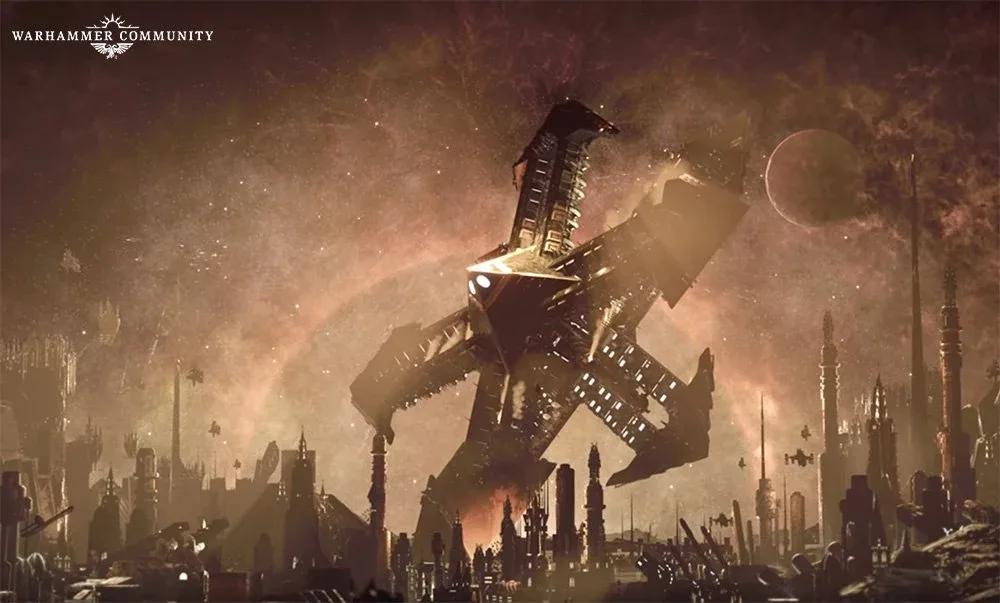
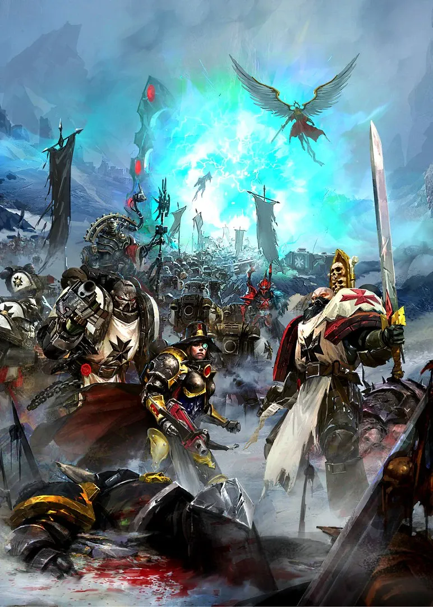
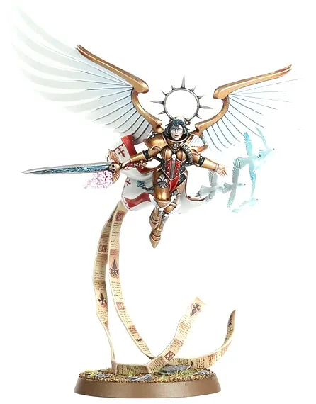
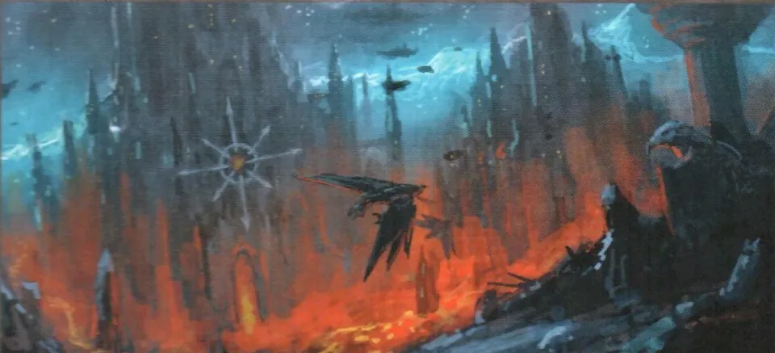

01ภาพรวม: ประตูที่ปิดไว้หมื่นปี
Cadia (คาเดีย) คือดาวป้อมปราการที่ตั้งอยู่ตรงทางออกที่ปลอดภัยเพียงทางเดียวจาก Eye of Terror ที่เรียกว่า Cadian Gate ทุกครั้งที่กองทัพ Chaos ออกมา พวกเขาต้องผ่านที่นี่ ชาว Cadia ทุกคนถูกฝึกเป็นทหารตั้งแต่เด็ก — ว่ากันว่าเรียนถอดประกอบปืน Lasgun ก่อนจะอ่านหนังสือออก และกรม Cadian Shock Troops คือทหารที่เก่งที่สุดของ Astra Militarum
ตลอดหมื่นปี Abaddon the Despoiler บุกออกจาก Eye of Terror มาแล้ว 12 ครั้ง (Black Crusade) หลายครั้งถูกหยุดที่ Cadia จนประโยค "Cadia Stands" (Cadia ยังยืนอยู่) กลายเป็นคำขวัญของจักรวรรดิ

ทั่วผิวดาว Cadia มีเสาหินสีดำขนาดยักษ์นับพันต้นที่ไม่มีใครรู้ว่าใครสร้าง Adeptus Mechanicus ดูแลมันมาหมื่นปีโดยไม่เข้าใจ ความจริงคือ Necron สร้างมันตั้งแต่ War in Heaven เพื่อกดพลังของ Warp — เสาเหล่านี้คือสิ่งที่ทำให้ Eye of Terror ไม่ขยายมากลืนกาแล็กซี และคือเหตุผลที่แท้จริงที่ Abaddon บุก Cadia ซ้ำแล้วซ้ำเล่า
02Black Crusade ครั้งที่ 13 เริ่มต้น
ก่อนการบุกใหญ่ มีสัญญาณร้ายมากมายทั่วภูมิภาค — ยาน Space Hulk ปรากฏ กองเรือโรคระบาดของ Typhus แพร่เชื้อซอมบี้ Space Wolves ที่หายสาบสูญ (13th Company) กลับมา และ Abaddon นำ Planet Killer จาก Gothic War กลับมาใช้อีก
การทรยศของ Volscani
กรมทหาร Volscani Cataphracts ของ Astra Militarum ที่ประจำบน Cadia แปรพักตร์ และลอบสังหารกองบัญชาการสูงสุดของ Cadia รวมถึง Lord Castellan ผู้ปกครองดาว
Ursarkar E. Creed
Creed พันเอกแห่งกรม Cadian ที่ 8 นักยุทธศาสตร์อัจฉริยะ ถูกแต่งตั้งเป็น Lord Castellan อย่างกะทันหัน เขาตั้งรับการบุกระลอกแรกและไล่ล่าฝ่ายศัตรูบนพื้นดาวได้
Kasr Kraf ถูกล้อม
Abaddon ส่งกองเรือที่สองและกองทัพที่นำโดย Urkanthos ขุนพลของ Black Legion บุกป้อมเมือง Kasr Kraf ศูนย์กลางการต้านทาน
Saint Celestine
นักบุญที่มีชีวิต Celestine ปรากฏตัวพร้อมผู้ติดตาม Urkanthos ถูกสังหาร Kasr Kraf รอด และให้เวลาฝ่ายจักรวรรดิย้ายไปตั้งรับที่ Elysion Fields ทุ่งเสา Pylon ที่ใหญ่ที่สุดบนดาว
Cawl กับ Trazyn
Archmagos Belisarius Cawl ซึ่งถูก Harlequin นำทางมาที่ Cadia ร่วมมือกับ Trazyn the Infinite นักสะสมแห่ง Necron ที่อยู่ในเหตุการณ์ตอนเสาถูกสร้างเมื่อหลายล้านปีก่อน ทั้งสองลงไปใต้ดินและปลุกเครือข่ายเสาได้สำเร็จ ลำแสงมืดพุ่งเข้าใส่ Eye of Terror จนมันเริ่มหดตัว
Will of Eternity
Abaddon เห็นว่าตัวเองแพ้ในสนาม จึงใช้แผนสุดท้าย — ทุ่ม Blackstone Fortress ชื่อ Will of Eternity ที่ถูกป้อมอวกาศ Phalanx ของ Imperial Fists ยิงจนพัง พุ่งชน Cadia เหมือนอุกกาบาต




03วันที่ Cadia แตก

ซากป้อมอวกาศพุ่งลงทวีป Cadia Tertius สร้างหลุมกว้างหลายร้อยกิโลเมตร ภูเขาพังเป็นผง ทะเลระเหยเป็นไอ แผ่นเปลือกโลกขยับ ภูเขาไฟที่หลับมานานระเบิด คลื่นยักษ์กลืนป้อมชายฝั่ง Kasr Vark ที่อยู่ห่างไปพันกิโลเมตรล่มลงทะเล ทุ่ง Tyrok ที่ Creed เคยได้ชัยแยกออกและจมลงสู่แมกมา
ที่ Elysion Fields ครึ่งโลกห่างออกไป ลมพายุพัดรถถังปลิวไปทั่วทุ่ง เสา Pylon ที่ยึดอยู่กับหินมาหลายล้านปีล้มลงทีละต้น ลำแสงที่ผลัก Eye of Terror กลับกะพริบแล้วดับ — และเสียงหัวเราะของเทพแห่ง Chaos ก็ดังขึ้น
เมื่อเสาล่ม Warp ก็ทะลักเข้ามา ปีศาจที่สมบูรณ์เต็มพลังปรากฏทั่วดาว ดาว Cadia เริ่มฉีกตัวเองออกเป็นชิ้น ๆ

04การอพยพและการหนีผ่าน Webway
Creed จัดการอพยพผู้คนได้ราว 3 ล้านคน ก่อนดาวจะแตก แล้วตัวเขาเองหายตัวไปอย่างลึกลับ — ปัจจุบันจักรวรรดิยังถือว่าเขาหายสาบสูญ และลูกสาวของเขา Ursula Creed ขึ้นเป็น Lord Castellan แทน ก่อนหน้านั้นไม่นาน Abaddon เคยเทเลพอร์ตเข้าใจกลางกองบัญชาการของ Creed เอง จ่าสิบเอก Jarran Kell ผู้ติดตามคนสนิทพา Creed ขึ้นยาน Valkyrie หนีได้ แต่ตัวเขาถูก Abaddon สังหาร คำพูดสุดท้ายของเขาคือ "Cadia stands!"
วีรบุรุษกลุ่มเล็ก ๆ — Saint Celestine, Inquisitor Greyfax และ Belisarius Cawl — หนีออกจากระบบด้วยความช่วยเหลือของ Ynnari กลุ่มใหม่ของ Aeldari ที่นำโดย Yvraine ผ่านประตู Webway บนดวงจันทร์น้ำแข็ง Klaisus พันธมิตรที่แปลกประหลาดนี้ ("Celestinian Crusade") จะนำไปสู่การปลุก Roboute Guilliman ให้ฟื้นคืนชีพ (ดู Indomitus Crusade)


05ผลที่ตามมา
- Great Rift — เมื่อเสา Pylon หายไป Eye of Terror ขยายตัวไม่หยุด และเชื่อมกับพายุ Warp อื่นจนกลายเป็นรอยแยก Cicatrix Maledictum ที่ผ่ากาแล็กซีเป็นสองส่วน
- Crimson Path — Abaddon ได้เส้นทางที่เขาต้องการมาหมื่นปี ทางสู่ Terra เปิดกว้างขึ้นกว่าครั้งไหน
- Cadia กลายเป็นฐานของ Chaos — ซากดาวถูกฝ่าย Chaos เข้ายึดเป็นฐานของอาณาจักรใหม่ ขณะที่ระบบรอบข้าง เช่น Belis Corona และ Agripinaa ยังสู้ต่อ
- "Cadia Stands" — ทหาร Cadia ที่รอดชีวิตยังรบต่อทั่วกาแล็กซี โดยเชื่อว่า "Cadia ยังยืนอยู่ ตราบใดที่ยังมีทหาร Cadia เหลือคนเดียว"

เนื้อเรื่องนี้มาจากหนังสือชุด The Gathering Storm: Fall of Cadia (2017) ซึ่งเป็นจุดเปลี่ยนของเนื้อเรื่อง 40K ที่ทำให้เวลาในจักรวาลเดินหน้าสู่ยุค Era Indomitus เป็นครั้งแรก
06แหล่งข้อมูลและหมายเหตุ
เนื้อหาหน้านี้สรุปและแปลเป็นภาษาไทยจากบทความใน Warhammer 40k Wiki (Fandom) ซึ่งเรียบเรียงจากหนังสือ Codex, หนังสือชุด Horus Heresy ของ Forge World และนิยาย Black Library ด้านล่างนี้ (ตรวจสอบ ต.ค. 2026)
เนื้อเรื่อง Warhammer ถูกเขียนเพิ่มและแก้ไขมาตลอดหลายสิบปี ปี จำนวน และรายละเอียดบางจุดต่างกันไปตามหนังสือแต่ละเล่ม หน้านี้ใช้ฉบับที่แหล่งอ้างอิงส่วนใหญ่ยอมรับ และบอกไว้เมื่อมีหลายฉบับ